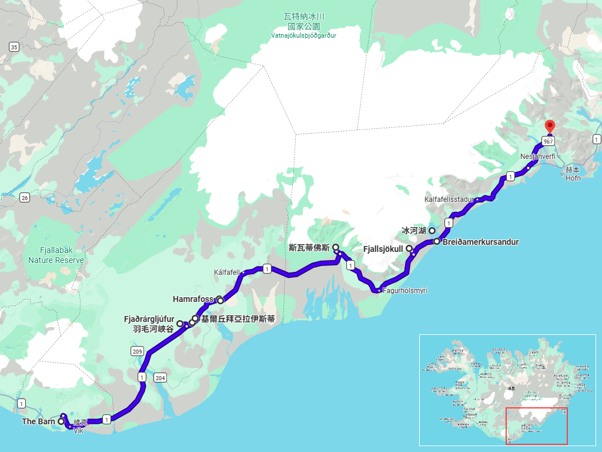

Day 09 · 2026-08-24（一）
冰島環島 Day 4/11
冰河湖傳奇：斯瓦提瀑布・傑古沙龍・鑽石沙灘
深入瓦特納冰川國家公園，欣賞黑色玄武岩瀑布與夢幻冰河湖景緻

行程明細DAY 09
| 時間 | 地點 | 地點 (英文) | 價格 | 預計停留(分鐘) | 備註 |
|---|---|---|---|---|---|
| 08:30 | 飯店出發 | 沿 1 號公路持續往東前進 | |||
| 08:50 | 姐妹岩 | Systrastapi Rock | 15–20 | 位於 Kirkjubæjarklaustur（基爾丘拜亞拉伊斯蒂）旁的玄武岩小山丘，與修道院歷史及修女傳說有關，可俯瞰小鎮 | |
| 09:30 | 羽毛河峽谷 | Fjaðrárgljúfur Canyon | 45–60 | 冰島最著名峽谷之一，擁有蜿蜒峽谷與觀景步道，也是熱門攝影景點 | |
| 11:00 | 基爾丘拜亞拉伊斯蒂 | Kirkjubæjarklaustur | 20–30 | 冰島南岸的重要補給小鎮，可加油、購物、用餐，也是前往冰川區的重要中繼站 | |
| 11:40 | 哈姆拉瀑布 | Hamrafoss Waterfall | 15–20 | 位於小鎮附近的小型瀑布，遊客較少，適合短暫停留休息 | |
| 12:10 | 侏儒玄武岩群 | Dverghamrar (Dwarf Cliffs) | 20–30 | 保存完整的六角形玄武岩柱群，因民間傳說而得名，是冰島著名地質景觀 | |
| 13:30 | 黑瀑布 | Svartifoss | 90–120 | 位於 Skaftafell 保護區內，需步行約 1.5 公里，以黑色玄武岩柱形成的瀑布聞名 | |
| 16:15 | 菲雅德斯冰川 | Fjallsjökull | 45–60 | 瓦特納冰川（Vatnajökull）的冰舌之一，可近距離欣賞冰川、冰山，亦是冰川健行熱門地點 | |
| 17:45 | 傑古沙龍冰河湖 | Jökulsárlón Glacier Lagoon | 60–90 | 冰島最具代表性的景點之一，可欣賞漂浮冰山、兩棲船、水陸船及海豹，是瓦特納冰川融冰形成的天然冰河湖 | |
| 19:20 | 鑽石冰沙灘 | Diamond Beach (Breiðamerkursandur) | 45–60 | 位於 Jökulsárlón 出海口旁，透明冰塊沖刷至黑沙灘上，如同散落的鑽石，是冰島最經典攝影景點之一 | |
| 20:30 | 抵達 Setberg Guesthouse Check-in |
每日三餐
早餐
未安排
午餐
未安排
Kirkjubæjarklaustur 或 Skaftafell 遊客中心附近解決，餐廳尚未確認
晚餐
未安排
Setberg Guesthouse 附近解決，餐廳尚未確認
住宿資訊
本日預估開車里程
238km
The Barn → Kirkjubæjarklaustur 73km → Skaftafell（Svartifoss）70km → Jökulsárlón 56km → Diamond Beach 2km → Setberg Guesthouse（Höfn）37km
該區域加油站
- N1 Skaftárskáli, Kirkjubæjarklaustur南岸東段主要補給站，建議在此加滿油
- N1 Höfn抵達住宿前的補給站